Через три недели аудит от торговой сети. Карты станций и журналов нет — только акты разовых обработок.
Служба качестваПищевое производство
Ставим объект на постоянный контроль: пронумерованные станции, осмотры по графику, журналы и отчёты, которые принимают Роспотребнадзор и аудиторы ХАССП. Препараты — только там, где без них не обойтись.
Разные объекты, но одна причина: вредителей травили, а не контролировали. Поэтому они возвращаются, а при проверке нечего показать.
Через три недели аудит от торговой сети. Карты станций и журналов нет — только акты разовых обработок.
Обрабатываем кухню каждый месяц, а через две недели тараканы снова тут. Хотим понять, откуда они идут.
Гость нашёл клопа в номере. Закрыть вопрос нужно быстро и без шума — и чтобы это не повторилось.
Знакомая ситуация? Начните с осмотра: специалист найдёт причину и покажет, что нужно для чистой проверки.
Заказать аудитСначала определяем вид. От него зависят места станций, частота осмотров и выбор средств.
Портят сырьё и упаковку, перегрызают кабели, переносят лептоспироз. Следы грызунов на складе сырья — почти гарантированное предписание.
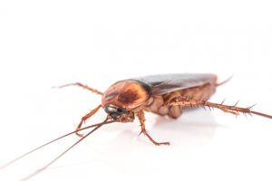
Прячутся в тёплых зонах у оборудования, в коробах и под мойками. Переносят возбудителей кишечных инфекций и быстро размножаются.
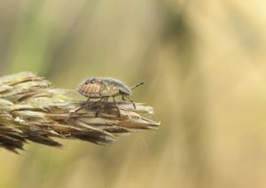
Заводятся в муке, крупах и сухих кормах. Заражённая партия уходит в брак, а очаг расходится по всему складу.
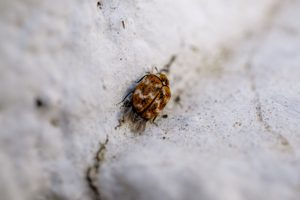
Приезжают с багажом гостей и вещами персонала. Один отзыв о клопах может стоить отелю загрузки на месяцы вперёд.
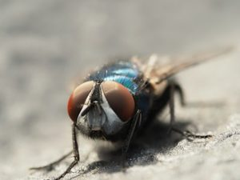
Летят на запах отходов и брожения. Массовые дрозофилы почти всегда говорят о проблеме с уборкой или хранением.
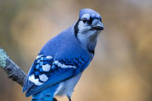
Гнездятся под кровлей и над рампами, загрязняют помётом продукцию, технику и фасады, переносят сальмонеллёз.
Работаем по принципам интегрированной защиты (IPM): выясняем, почему вредитель появился, и закрываем эту причину. Химия — точечно и только по данным мониторинга.
Щели, вводы коммуникаций, открытые ворота и вентиляция. Даём перечень доработок с фото.
Проверяем хранение сырья, уборку, вывоз отходов и протечки — всё, что даёт вредителю еду, воду и укрытие.
Каждая станция учитывается при осмотре. Решение об обработке принимаем по цифрам, а не по календарю.
Обрабатываем только очаг, подбираем средство под вид и чередуем действующие вещества, чтобы не появлялась устойчивость.
У производства, отеля и склада разные проверяющие и разные риски. Учитываем это с первого выезда.
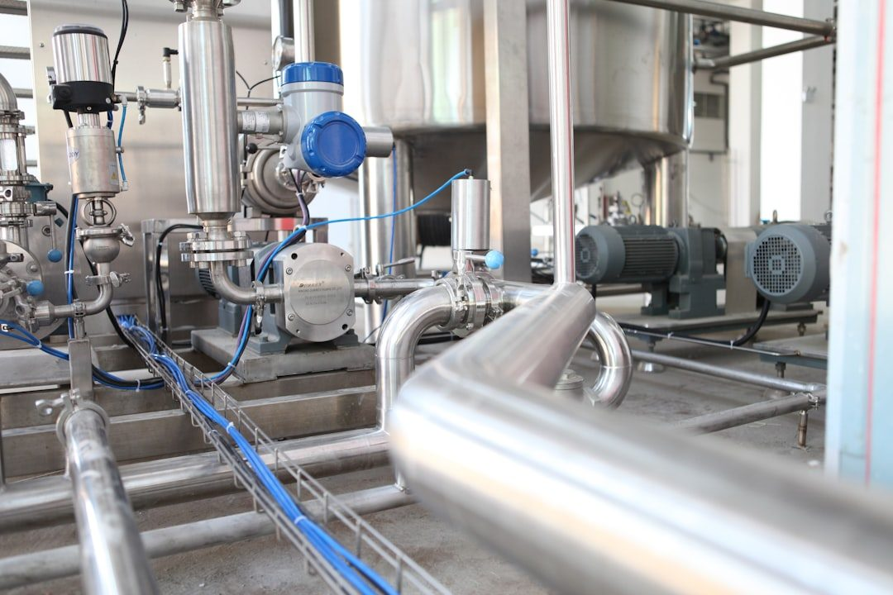
Мясо, молоко, хлеб, кондитерские изделия. Зонирование по ХАССП, закрытые станции в цехах, полный пакет документов к аудиту сети.
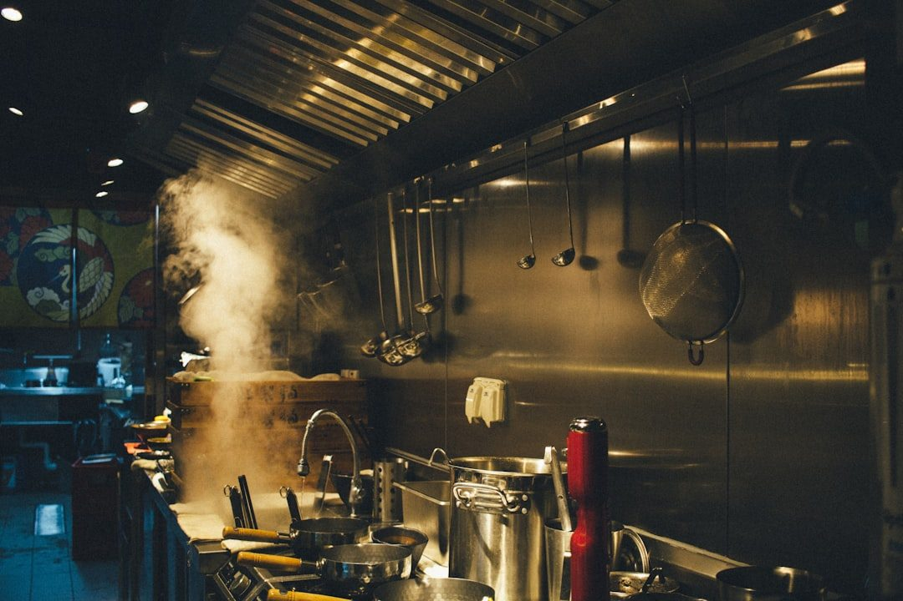
Выезжаем после закрытия, к открытию — без запаха. Главные задачи — тараканы и мухи на кухне, в мойке и на складе.
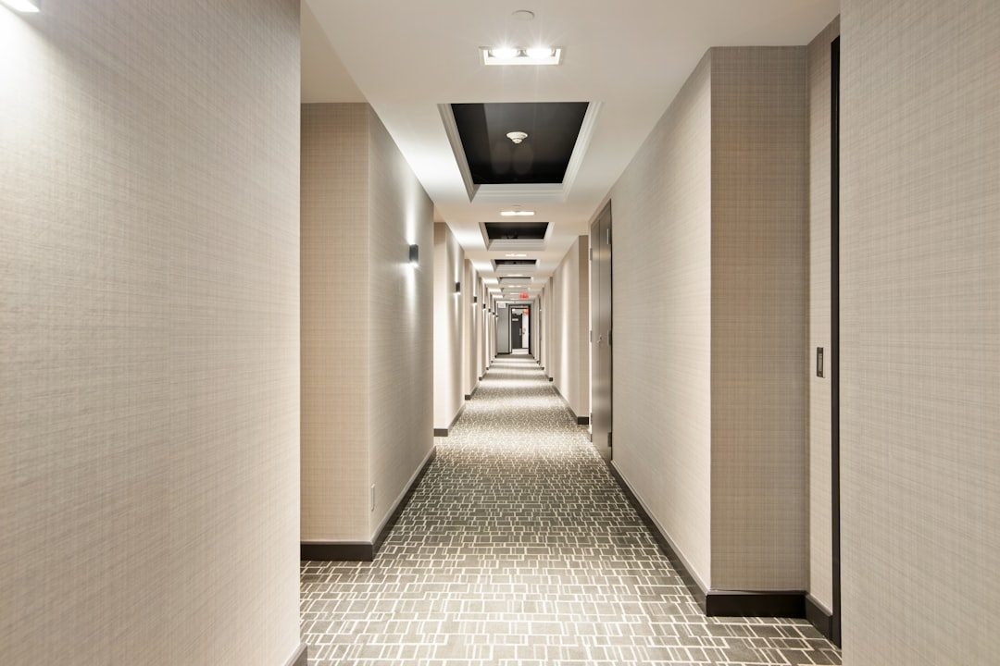
Плановые осмотры номерного фонда, срочный выезд по жалобе гостя, обучение горничных признакам клопов.
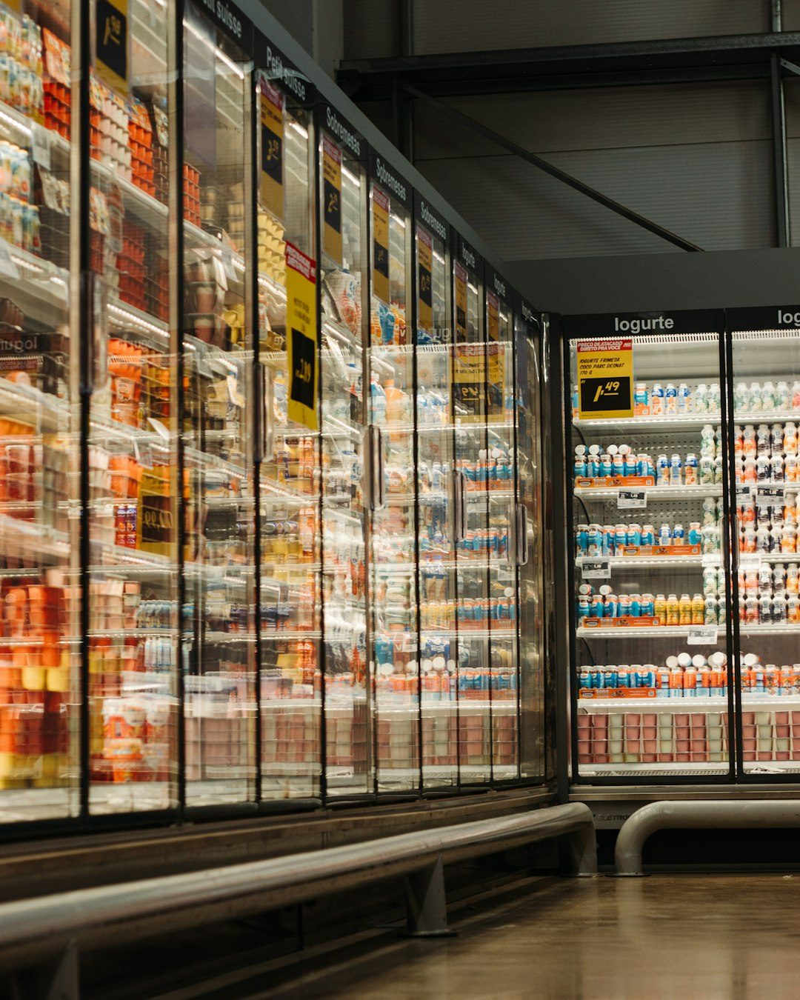
Единый стандарт и общая отчётность по всем магазинам: торговый зал, склад, зона приёмки, контейнерная площадка.
Защита периметра и рамп, контроль грызунов в зоне приёмки, мониторинг по зонам хранения.
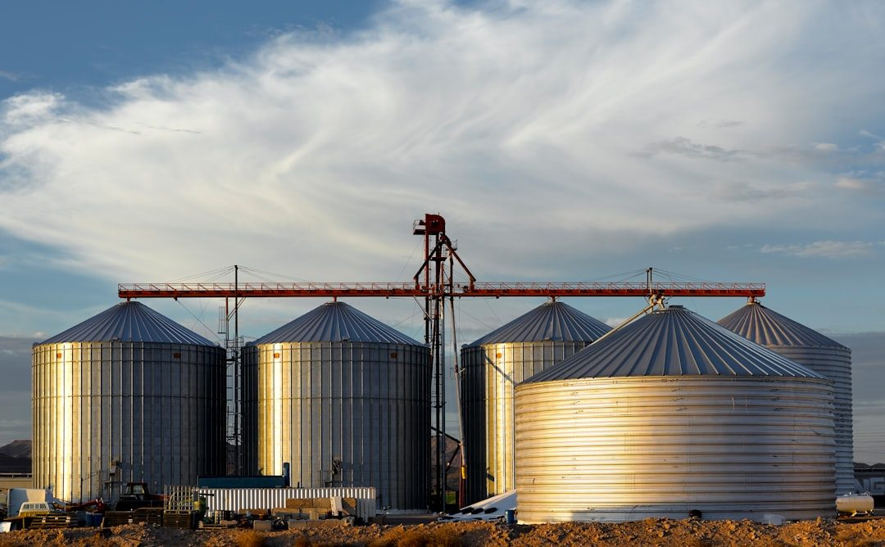
Контроль вредителей зерна и запасов, фумигация силосов и складов, феромонные ловушки для раннего выявления.
Четыре шага — от первого выезда до обслуживания по договору.
Специалист осматривает объект, фиксирует на фото следы активности и уязвимые места, проверяет документы, которые у вас уже есть.
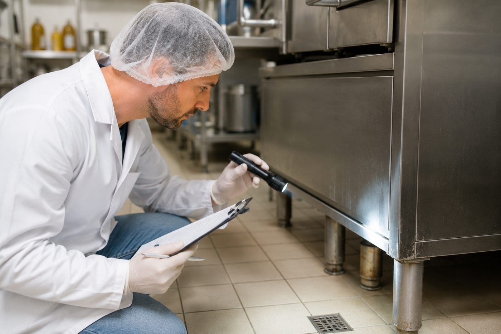
Готовим схему размещения станций, график осмотров, перечень средств с госрегистрацией и фиксированную стоимость обслуживания.
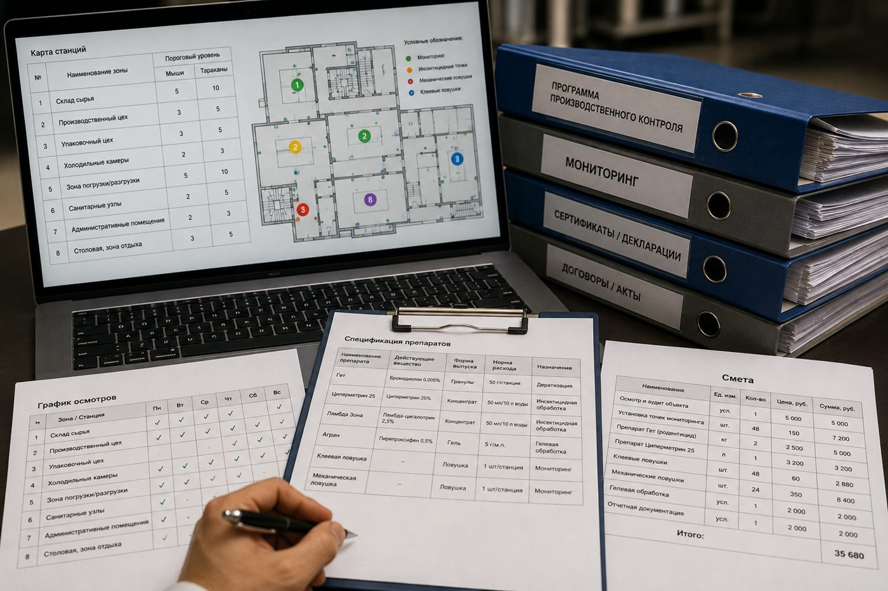
Устанавливаем и нумеруем станции, ловушки и лампы, заводим журналы. Если есть активный очаг — проводим первичную обработку.
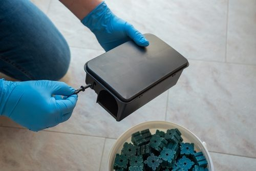
Осмотры по графику, учёт по каждой станции, корректировка программы и отчёт по итогам месяца.
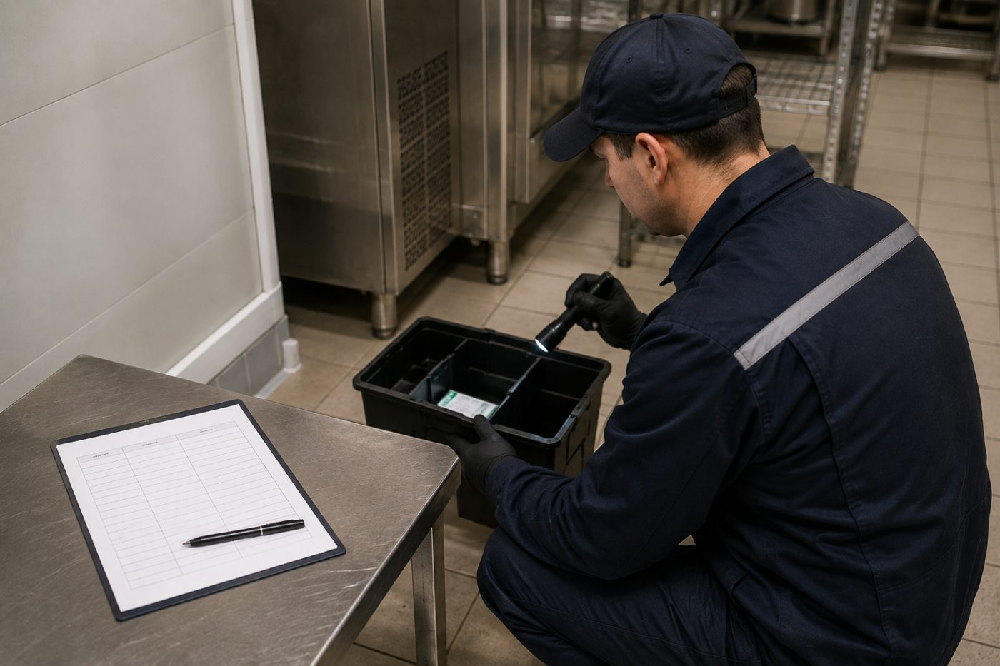
Всё, что спросит инспектор Роспотребнадзора или аудитор ХАССП, ведём за вас и обновляем после каждого визита.
Объекты, периодичность, ответственные. Основа для раздела пест-контроля в плане ХАССП.
План объекта с пронумерованными точками контроля — каждая станция на своём месте.
Итоги каждого осмотра: дата, станция, находки, принятые меры.
Что сделано, каким средством, в какой концентрации и с какими мерами безопасности.
Копии свидетельств о госрегистрации и инструкции на все применяемые средства.
Динамика по зонам, выявленные нарушения и что поправить до следующего визита.
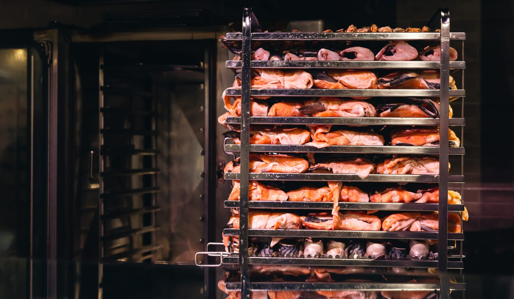
Аудит, схема станций, журналы и обучение персонала — до визита аудитора. Сопровождаем и на самой проверке.
Срочный осмотр номера и соседних, обработка очага, повторный контроль и профилактический осмотр номерного фонда.
Обработка по графику убивает тех, кто попал под препарат, но не убирает причину. При постоянном контроле мы видим по станциям, где и когда появилась активность, и закрываем путь проникновения. Препарата нужно меньше, а у вас появляется история наблюдений для проверки.
Да. Специалист выезжает, осматривает объект и оставляет акт с выводами. После этого мы присылаем программу и смету. Если не подойдёт — вы ничего не должны, акт остаётся у вас.
Да. Осмотры станций не мешают процессу, а обработки, если они нужны, планируем на ночь, выходные или санитарный день. Для ресторанов выезжаем после закрытия.
Договор и программу, схему станций, журналы осмотров, акты выполненных работ, копии СГР и инструкции на средства, ежемесячный отчёт. Этого достаточно для инспектора Роспотребнадзора и раздела пест-контроля на аудите ХАССП.
Приманки находятся в закрытых станциях — к ним нет доступа ни людям, ни продукции. В производственных зонах применяем нетоксичные ловушки и клеевые пластины. Используем только зарегистрированные средства и соблюдаем инструкции по применению.
Зависит от площади, типа объекта, количества точек контроля и частоты осмотров. Точную сумму называем после аудита и фиксируем в договоре — без доплат за каждый выезд по графику.
Оставьте контакты — перезвоним, согласуем удобный день и пришлём специалиста. Осмотр ни к чему не обязывает.